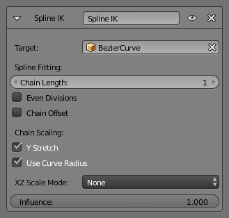

Примус «Сплайнова ІК» -- Spline IK Constraint¶
Примус «Сплайнова ІК» -- Spline IK вирівнює ланцюг кісток вздовж кривої. Використовуючи легкість та гнучкість досягнення естетично приємних форм, пропонованих кривими, та передбачуваність та добре інтегроване керування, пропоноване кістками, Сплайнова ІК є безцінним засобом в інструментарії оснащувачів. Це особливо добре підходить для оснащення гнучких частин тіла, таких як хвости, щупальця та хребти, а також для неорганічних елементів, як мотузки.
Для укладання примусу Spline IK необхідно мати ланцюг з'єднаних кісток та криву для примушування цих кісток:
- З виділеною останньою кісткою у ланцюгу додайте примус Spline IK на вкладці «Примуси Кісток» -- Bone Constraints у Редакторі Властивостей -- Properties Editor.
- Задайте значення устави «Довжина Ланцюга» -- 'Chain Length' як кількість кісток у ланцюгу (починаючи з та включаючи виділену кістку), на які буде впливати крива.
- Останнім кроком, задайте у полі Target криву, що повинна керувати ланцюгом.
Опції¶

Панель примусу «Сплайнова ІК» -- Spline IK.
- Ціль -- Target
- Поле Ідентифікатор даних --- Data ID використовується для вибору цільової кривої.
Підгонка Сплайна -- Spline Fitting¶
- Довжина Ланцюга -- Chain Length
- Скільки кісток включені у цей ланцюг.
- Рівні Поділи -- Even Divisions
- Вмикає ігнорування відносної довжини кісток при припасуванні ланцюга до кривої.
- Зсув Ланцюга -- Chain Offset
- Зсув усього ланцюга відносно кореневого суглоба.
Масштабування Ланцюга -- Chain Scaling¶
- Розтяг за Y -- Y Stretch
- Розтягує кістки за Y віссю при припасуванні під криву.
- Вжити Радіус Кривої -- Use Curve Radius
- Усереднений радіус кінцевих точок використовується для підправлення масштабування кісток за X та Z, поверх режиму масштабу за X та Z.
- Режим Масштабу за XZ -- XZ Scale Mode
Масштабування, яке зазнає кістка при дотягуванні відносно її цілі.
- Нема -- None
- Нема масштабування за осями X та Z.
- Оригінал Кістки -- Bone Original
- Передбачає вживання оригінального масштабування кісток.
- Інверсія Масштабу -- Inverse Scale
- Масштаб за X та Z осями є інверсією, оберненням масштабу за Y.
- Зберігання Об'єму -- Volume Preservation
- Працює подібно, як і для примусу «Розтяг За» -- Stretch to.
Xem thêm
This subject is seen in-depth in the Armature Posing section.